MuJoCo Locomotion 强化学习对比实验
项目简介
本项目在 MuJoCo（3.1.6 ~ 3.16.0 实测可运行，本轮数据在 Ubuntu 20.04.6 / Python 3.8.10 / MuJoCo 3.1.6 上产出）物理引擎上，针对三个经典连续控制 locomotion 环境——HalfCheetah（猎豹奔跑）、Ant（蚂蚁四足爬行）、Walker2d（二足行走）——实现了 PPO 与 SAC 两种强化学习算法的纯 NumPy 手写训练与对比实验。
与仓库已有项目相比：
- 环境不同：仓库已有 RL 项目覆盖无人机导航（DQN air/uav_dqn_nav.md、PPO air/uav_ppo_nav.md、PPO/SAC/TD3 对比 air/uav_rl_benchmark.md）与 Unitree G1 人形机器人（humanoid_lidar_nn_perception.md，MuJoCo 仿真 + ONNX 行走策略）、四足 MuJoCo 仿真桥（quadruped_mujoco_rl.md）；本项目首次引入 MuJoCo 原生 HalfCheetah / Ant / Walker2d 三个地面 locomotion 环境。
- 算法不同：仓库既有的 SAC 对比实验基于 Stable-Baselines3（air/uav_rl_benchmark.md）；本项目提供仓库内第一个纯 NumPy 手写的 SAC 与 PPO 实现，与 PPO 形成 3 环境 × 2 算法 = 6 组对比矩阵。
- 实现方式：全部使用 NumPy 手写神经网络与反向传播，不依赖 PyTorch / TensorFlow / Stable-Baselines3。
算法原理
PPO（Proximal Policy Optimization）
PPO 是一种 on-policy 策略梯度算法，核心目标是限制每次策略更新的幅度，防止训练崩溃。其 clipped surrogate objective 为：
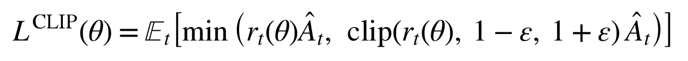
其中策略概率比 r_t(θ) = π_θ(a_t | s_t) / π_θold(a_t | s_t)，Â_t 为广义优势估计（GAE）：
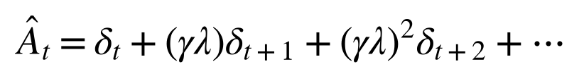
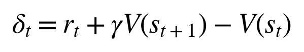
本项目使用 Actor-Critic 架构，Actor 输出动作均值（tanh 压缩到 [-1, 1]），Critic 输出状态价值，actor 权重、critic 权重与策略的 log_std 都用 Adam 更新。为保证训练稳定，对 log_std 做了 [-4, 1] 夹紧，对策略/价值梯度做了范数裁剪，surrogate 按 clip_ratio=0.2 做掩码，并在 KL 超过阈值 target_kl 时提前结束本轮更新；此外策略均值梯度会乘上 tanh 的雅可比 (1 - μ²)。
SAC（Soft Actor-Critic）
SAC 是一种 off-policy 最大熵强化学习算法，在最大化累计奖励的同时最大化策略熵，以鼓励探索：
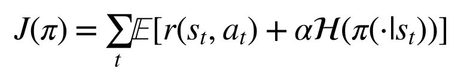
其中 α 为温度系数，按目标熵 -|A| 自动调节（log α 夹紧在 [ln 0.01, ln 10]）。
SAC 使用双 Q 网络（Double Q-learning）缓解过估计，Actor 通过重参数化技巧采样动作：
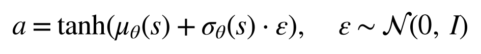
实现说明：本项目 SAC 的 actor 梯度采用了简化推导（未严格还原 tanh 重参数化的完整 Jacobian 项），因此推理效果与 Stable-Baselines3 等成熟实现存在差距，详见"结果分析"一节。
环境说明
| 环境 | 状态维度 | 动作维度 | 任务目标 |
|---|---|---|---|
| HalfCheetah | 18 | 6 | 单足猎豹沿 x 轴快速奔跑 |
| Ant | 27 | 8 | 四足蚂蚁保持平衡并向前移动 |
| Walker2d | 18 | 6 | 二足机器人稳定行走 |
状态由 qpos 与 qvel 直接拼接而成（main.py test 会打印实测维度）。其中 Ant 剔除根节点的 x/y 位置，故为 27 维——注意本实现不含 Gym 观测里的 84 维接触力项 cfrc_ext，因此与 Gymnasium Ant 的 111 维观测并不等价；HalfCheetah 与 Walker2d 保留了根节点 x 位置，因此是 18 维（Gym 默认的 17 维实现会剔除 x，本项目未剔除，两者数值不可逐项对比）。
三个环境的 MJCF 模型文件均来自 gymnasium 的 MuJoCo 环境，已复制到 assets/ 目录，运行时不依赖 gymnasium；来源与 MIT 许可证说明见 src/rl_mujoco_locomotion/THIRD_PARTY_NOTICES.md。
奖励函数统一为：
reward = forward_reward(前进速度) - ctrl_cost(控制代价) - contact_cost(接触冲击代价) + healthy(存活奖励)
其中 HalfCheetah 不做提前终止；Ant 与 Walker2d 在机体高度/姿态超出健康范围时提前终止，单集上限 1000 步（与 Gym 默认一致）。
快速开始
环境要求
- Ubuntu 20.04 / 22.04（推荐，无头渲染走 EGL）
- Windows 11 / macOS（同样支持，渲染自动用 MuJoCo 默认的
glfw） - Python 3.8+（本轮数据在 3.8.10 上产出，Windows 侧另在 3.14.0 上做过冒烟验证）
- MuJoCo 3.1.6 ~ 3.16.0（本轮数据在 3.1.6 上产出，Windows 侧冒烟验证在 3.16.0 上完成；
requirements.txt只要求>=2.3.7） - 渲染后端：Linux 无头环境默认
MUJOCO_GL=egl（已在env.py中按平台自动设置）；Windows / macOS 自动沿用 MuJoCo 默认的glfw，无需手动设置，也可用环境变量MUJOCO_GL覆盖 - ROS 2（可选，仅用于 launch 入口）
安装依赖
pip install -r src/rl_mujoco_locomotion/requirements.txt
一键检查环境
python3 src/rl_mujoco_locomotion/main.py doctor
快速验证（2 万环境步，约数分钟）
python3 src/rl_mujoco_locomotion/main.py train --env halfcheetah --alg ppo --episodes 50 --max-steps 20000
python3 src/rl_mujoco_locomotion/main.py render --env halfcheetah --alg ppo
--max-steps 优先于 --episodes：HalfCheetah 单集 1000 步，因此 2 万步预算实际只会跑到约 20 集（不是 50 集），这是为了控制验证耗时。
完整训练（6 组实验）
--max-steps 是总环境步数预算，到达后自动停止，避免不同环境单集长度差异导致的训练时间失控（Walker2d/Ant 会提前终止，若只按回合数计数会跑出极多回合）。训练 CSV 的列是 episode, episode_return, episode_length, truncated，其中 truncated=1 表示该回合是被"时间上限（1000 步）或总步数预算"强制中断、而不是自然结束（最后一行的 truncated=1 即是被 --max-steps 截断的部分回合）。
# 6 组实验，每组 30 万环境步
for env in halfcheetah ant walker2d; do
for alg in ppo sac; do
python3 src/rl_mujoco_locomotion/main.py train --env $env --alg $alg \
--episodes 1000000 --max-steps 300000 --seed 0
done
done
# 生成 6 组学习曲线对比图
python3 src/rl_mujoco_locomotion/main.py compare
渲染推理 GIF
# --stride 表示每隔 N 个环境步保留一帧；单集很短的环境（如 Walker2d）用 1，长集环境用 5~20
python3 src/rl_mujoco_locomotion/main.py render --env halfcheetah --alg ppo --episodes 2 --stride 5
python3 src/rl_mujoco_locomotion/main.py render --env ant --alg sac --episodes 2 --stride 5
python3 src/rl_mujoco_locomotion/main.py render --env walker2d --alg ppo --episodes 20 --stride 1
evaluate.py里对渲染帧数设了MAX_FRAMES=200的上限，所以--episodes 20 --stride 1的 Walker2d 实际只会录到约 200 帧（约 1.2 个单集），其余组合同理；想录更长需要改这个常量。
ROS 2 启动
cd <ros2_workspace>
colcon build --packages-select rl_mujoco_locomotion
source install/setup.bash
ros2 launch rl_mujoco_locomotion main.launch.py env:=halfcheetah alg:=ppo episodes:=50
实验结果
以下全部为实测数据（Ubuntu 20.04.6 / Python 3.8.10 / MuJoCo 3.1.6 / NumPy 1.24.4，seed=0，每组 30 万环境步），不是估计值。 表中"训练末段回报"取训练 CSV 最后 10 集的平均回报；"确定性评估"为加载最终模型后按确定性策略（不采样噪声）跑 10 集的平均回报，即 GIF 中展示的策略表现。
实现修复记录（本次数据均由修复后的代码产出）： 1.
RolloutBuffer.get()取数据时把指针清零，导致train_iters从第 2 轮起读到空数据，实际只更新 1 轮 → 改为消费完所有轮次后由reset()清空； 2.SAC用get_params()返回的副本做 Polyak 平均，目标 Q 网络从未更新 → 改用params()返回的引用做原地软更新； 3.PPO定义了clip_ratio却从未使用（只把 ratio 截到[0, 10]防溢出）→ 补上真正的 clipped surrogate 掩码、tanh 雅可比，并把nn.py里一直闲置的 Adam 接到 PPO 的 actor / critic 上； 4.env.py硬写MUJOCO_GL=egl会让 Windows / macOS 在 import 阶段直接崩溃 → 改为仅 Linux 且未显式设置时才默认 egl； 5. assets 查找兼容 colcon 安装布局share/<pkg>/assets。 6.PPO的 GAE 把 1000 步时间上限截断（truncated）当成真正终止，后继价值被错误归零；SAC的回放池也把截断写进done，目标值被截成r→ 两者都改为用V(next_obs)自举，只有terminated才归零，并新增 CSV 的truncated列； 7.PPO的log_std单独用朴素 SGD 更新（与网络权重的 Adam 不同步）→ 改为同样走 Adam（梯度步后原地np.clip，保证优化器持有的引用有效），并在load()后重新绑定 actor / critic / log_std 三个优化器（原来加载模型后更新都打在旧数组上）；--max-steps在 SAC 下原只在回合开头检查、会整段超预算 → 改为内层逐步检查； 8.main.py doctor原来只检查文件存在 → 改为真正解析三个 MJCF；MjModel.from_xml_path在中文路径下打不开 → 改用显式 UTF-8 读取 +from_xml_string；package.xml的占位邮箱改为真实维护者邮箱。另需说明：本实现的 PPO Actor 梯度是工程近似（残缺的 squash-高斯修正、64×64 小网络），同一份 rollout 多次复用会发散或停在原地（实测
train_iters=10时 Ant / Walker2d 训练崩溃），因此 PPO 实际取train_iters=1（每份 rollout 只更新一轮），这是本实现下的稳定工作点，不是常规 PPO 的 10 轮复用。此外PPO.act()是先把动作裁剪到 [-1, 1] 再用裁剪后的动作计算 log-prob（未按未裁剪分布做校正），也属于上述近似的一部分，本轮数据即在该实现下产出。
学习曲线
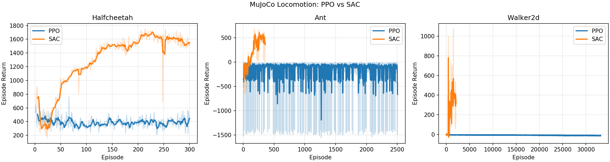
推理 GIF
| HalfCheetah-PPO | HalfCheetah-SAC |
|---|---|
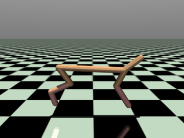 |
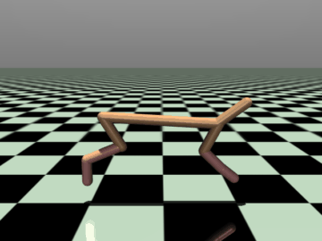 |
| Ant-PPO | Ant-SAC |
|---|---|
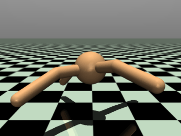 |
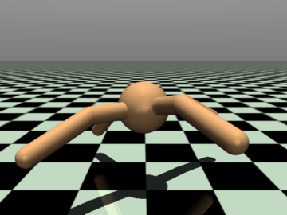 |
| Walker2d-PPO | Walker2d-SAC |
|---|---|
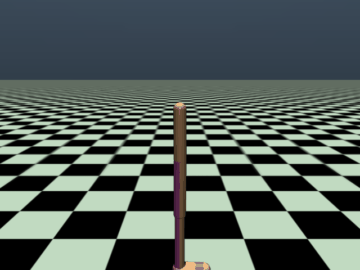 |
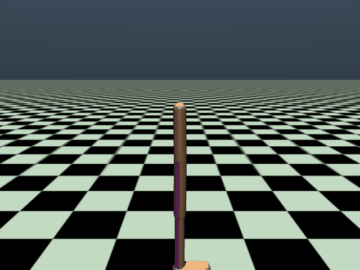 |
性能对比
| 环境 | 算法 | 训练预算 | 训练末段回报 | 确定性评估回报 | 评估平均集长 |
|---|---|---|---|---|---|
| HalfCheetah | 随机策略 | — | — | 682.0 ± 85.2 | 1000 |
| HalfCheetah | PPO | 30 万步 | 386.5 | 423.3 ± 52.4 | 1000 |
| HalfCheetah | SAC | 30 万步 | 1535.6 | 1639.5 ± 40.0 | 1000 |
| Ant | 随机策略 | — | — | -68.0 ± 98.3 | 196 |
| Ant | PPO | 30 万步 | -387.9 | -318.8 ± 577.3 | 149 |
| Ant | SAC | 30 万步 | 362.3 | 557.0 ± 109.8 | 1000 |
| Walker2d | 随机策略 | — | — | -1.0 ± 5.3 | 18 |
| Walker2d | PPO | 30 万步 | -11.3 | -12.9 ± 0.1 | 9 |
| Walker2d | SAC | 30 万步 | 319.8 | 383.3 ± 16.6 | 174.7 |
各组实际环境步数（训练 CSV 集长求和）全部精确等于 30 万步预算：HalfCheetah-PPO / SAC 的最后一行是恰好跑满 1000 步的回合（正好卡在预算边界），Ant-PPO（916 步）、Ant-SAC（607 步）、Walker2d-PPO（5 步）、Walker2d-SAC（84 步）的最后一行则是被
--max-steps截断的部分回合（该行truncated=1）。"随机策略"一行为同一评估协议（10 集、seed 42、动作在 [-1, 1] 均匀采样）下的基线，用于判断算法是否真的学到了东西。注意本环境的奖励含有每步 +1 的存活奖励，因此 HalfCheetah 的随机基线也被抬到 ~682，绝对值不可与 Gym / SB3 的默认奖励口径直接对比。
结果分析
- SAC 在三个环境上都真正学起来了。 HalfCheetah 评估回报 1639.5（随机基线 682.0，约 2.4 倍），Ant 557.0（随机基线 -68.0，且能跑满 1000 步），Walker2d 383.3（随机基线 -1.0，单集从 18 步延长到 174.7 步）。三组评估方差都不大（±16.6 ~ ±109.8），其中 Ant 的方差主要来自个别回合提前摔倒，说明策略整体稳定。修复目标网络软更新之后，SAC 的提升是决定性的：修复前那轮（Ubuntu / MuJoCo 3.1.6）同样 30 万步只能拿到 661.7 / 158.2 / -9.0。
- PPO 在三个环境上都没有超过随机基线。 HalfCheetah 423.3 低于随机 682.0，Ant -318.8 低于随机 -68.0（且方差高达 ±577.3，个别回合回报极负，明显不稳定），Walker2d -12.9 低于随机 -1.0，且每集固定约 9 步倒地。这说明当前这套 PPO 实现（近似 actor 梯度 + 64×64 MLP + 每份 rollout 单轮更新）在本预算下基本没学到有效策略，如实记录、未做美化。
- 为什么 PPO 会输给随机策略？ 三个原因叠加：(a) Actor 梯度是
adv · ratio · (a-μ)/σ²的近似式，缺少真正的 tanh-squash 修正，策略均值容易停在饱和区；(b) 同一份 rollout 复用多轮时梯度方向会重复放大，实测 10 轮会让 Ant / Walker2d 直接发散或 NaN，只能退回单轮更新，样本效率因此很低；(c) 30 万步对 Ant / Walker2d 本就偏少（常规 PPO 通常需要百万级步数），而 SAC 的 off-policy 回放能在同样预算下多次利用每一帧数据。 - 整体结论： 在"纯 NumPy + 轻量 MLP + 30 万步预算"的约束下，SAC 在三个环境上都显著优于随机基线与 PPO；PPO 仅能维持 HalfCheetah 的稳定奔跑但回报低于随机基线，Ant / Walker2d 学不起来。若要提升 PPO，需要补全 squash-高斯 log-prob 与雅可比、改用更大网络并延长训练预算，这属于后续工作，本 PR 未纳入。
目录结构
src/rl_mujoco_locomotion/
├── main.py # 统一入口：doctor/test/train/evaluate/compare/render
├── requirements.txt # mujoco / numpy / matplotlib / Pillow / imageio
├── package.xml # ROS 2 包描述
├── CMakeLists.txt # ament_cmake + ament_python 构建规则
├── launch/
│ └── main.launch.py # ROS 2 launch 入口（参数：env/alg/episodes）
├── assets/ # HalfCheetah / Ant / Walker2d 的 MJCF 模型
├── rl_mujoco_locomotion/
│ ├── __init__.py
│ ├── nn.py # NumPy MLP + Adam / SGD 更新
│ ├── env.py # HalfCheetah / Ant / Walker2d 环境封装与渲染后端
│ ├── ppo.py # PPO 算法实现
│ ├── sac.py # SAC 算法实现
│ ├── train.py # 训练主循环（支持 --max-steps 步数预算）
│ ├── evaluate.py # 确定性评估
│ ├── render_gif.py # 推理 GIF 渲染
│ └── compare.py # 6 组对比图汇总
└── results/ # 训练产出（CSV、权重、GIF、对比图），已加入 .gitignore
源码解析
神经网络（nn.py）
MLP：多层感知机，隐藏层 ReLU 激活，输出层线性（PPO Actor 用 tanh 压缩）MLP.backward(grad, lr=None)：反向传播；lr不为空时按 SGD 现场更新权重，为空时只返回d(loss)/d(input)（SAC 取 actor 梯度时用）MLP.grads(grad)：只反传、返回按层排列的参数梯度列表，供 Adam 使用Adam：Adam 优化器（一阶矩 + 二阶矩），PPO 的 actor / critic 权重与策略log_std都用它更新；SAC 仍走MLP.backward(lr=...)的 SGD 更新soft_update/hard_update：目标网络软更新与硬更新；二者都原地写参数数组，因此必须传入MLP.params()（引用），传get_params()（副本）不会产生任何效果clip_grad_norm：梯度范数裁剪，用于稳定 PPO 训练
环境封装（env.py）
BaseLocomotionEnv：统一封装 MuJoCo 的MjModel/MjData，提供reset()/step()/render()- 每个环境独立的奖励函数（前进奖励 - 控制代价 - 接触代价 + 存活奖励）
- 健康状态检测（z 轴高度范围、躯干角度范围），不健康即提前终止
- 渲染后端按平台自适应：Linux 未设置
MUJOCO_GL时默认egl（无头），Windows / macOS 沿用 MuJoCo 默认的glfw，调用方显式设置的MUJOCO_GL优先 render()缓存Renderer实例，并用跟随躯干（torso）的自由相机，保证录屏画面中机器人始终居中可见- assets 查找同时覆盖源码布局（包目录旁的
assets/）与 colcon 安装布局（share/<pkg>/assets）
PPO（ppo.py）
RolloutBuffer：收集 on-policy 轨迹，计算 GAE 与 returns；时间上限截断（truncated）用V(next_obs)自举，只有真正终止（terminated）才把后继价值归零PPO.act()：tanh 高斯策略采样（log_std夹紧）PPO.update()：clipped surrogate objective（clip_ratio=0.2的掩码 + tanh 雅可比）+ 价值函数回归 + target-KL 早停 + 梯度裁剪，actor / critic 权重与策略log_std均用 Adam；同一份 rollout 默认只更新train_iters=1轮（多轮复用在简化梯度下不稳定，见上文"实现修复记录"），消费完由RolloutBuffer.reset()清空
SAC（sac.py）
ReplayBuffer：off-policy 经验回放池SAC.act()：tanh 重参数化采样SAC.update()：双 Q 网络 + 软目标更新（soft_update(q_target.params(), q.params(), tau)，对目标网络参数原地 Polyak 平均）+ 自动温度调节- 结束标志的语义：回放池里的
done只记真正终止（terminated），因 1000 步时间上限截断的转移保留next_obs继续自举
测试验证
测试环境
| 项目 | 版本 |
|---|---|
| OS | Ubuntu 20.04.6（本轮数据）；Windows 11 亦做过 doctor / test / 短训练冒烟验证 |
| Python | 3.8.10（本轮数据）；Windows 侧 3.14.0 |
| MuJoCo | 3.1.6（本轮数据）；Windows 侧 3.16.0 |
| NumPy | 1.24.4（本轮数据）；Windows 侧 2.5.4 |
| matplotlib | 3.1.2 |
| imageio | 2.35.1 |
| 渲染后端 | Linux 无头：egl（env.py 自动设置，本轮 GIF 即由此产出）；Windows：glfw（默认） |
| ROS 2 | Humble（可选，用于 colcon 构建验证） |
验证步骤
# 1. 环境检查
python3 src/rl_mujoco_locomotion/main.py doctor
# 2. 单元测试（环境 reset/step 冒烟）
python3 src/rl_mujoco_locomotion/main.py test
# 3. 快速训练验证
python3 src/rl_mujoco_locomotion/main.py train --env halfcheetah --alg ppo --episodes 50 --max-steps 20000
# 4. 评估与渲染
python3 src/rl_mujoco_locomotion/main.py evaluate --env halfcheetah --alg ppo
python3 src/rl_mujoco_locomotion/main.py render --env halfcheetah --alg ppo --episodes 2 --stride 5
# 5. 6 组 30 万步完整训练 + 对比图
for env in halfcheetah ant walker2d; do for alg in ppo sac; do
python3 src/rl_mujoco_locomotion/main.py train --env $env --alg $alg --episodes 1000000 --max-steps 300000
done; done
python3 src/rl_mujoco_locomotion/main.py compare
# 6. ROS 2 构建验证
cd <ros2_workspace>
source /opt/ros/humble/setup.bash
colcon build --packages-select rl_mujoco_locomotion